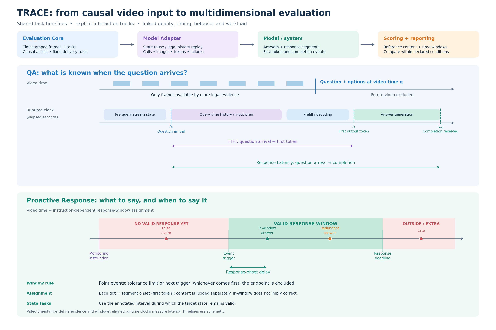
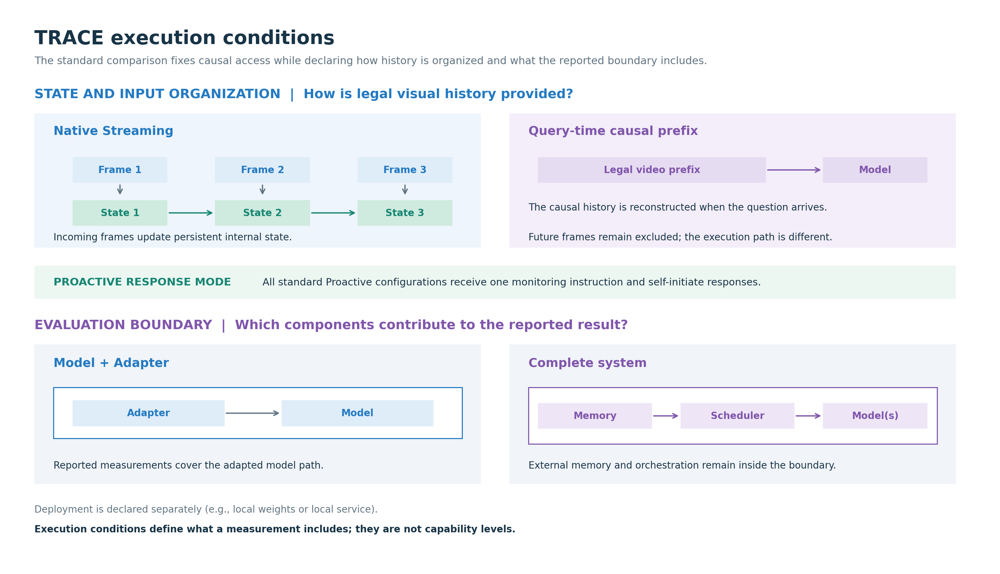

Q
QA
Ask a question at a timestamp and score the answer against the legal video history available at that moment.
TRACE is a public benchmark for evaluating how models observe a video stream, answer at the right time, and respond under clearly declared execution conditions.

Streaming systems can produce similar answers through very different paths. TRACE keeps those paths legible so quality, timing and behavior can be read together.
Ask a question at a timestamp and score the answer against the legal video history available at that moment.
Let a system decide what to say and when to say it around an upcoming event window.
Keep timestamps, history boundaries, response windows and stopping points alongside each result.
Separate benchmark timing and visual delivery from the model or end-to-end system being tested.
Use versioned annotations, reproducible bundles and explicit data terms as part of the workflow.
A local-first release for inspecting streaming behavior under declared conditions.
Native and non-native visual states, autonomous and polling triggers, and model/Adapter versus complete-system boundaries describe how a result was obtained. They are dimensions of comparison, not a single capability ladder.

Filter the measured configurations by task, execution group and operational metric in the embedded leaderboard.